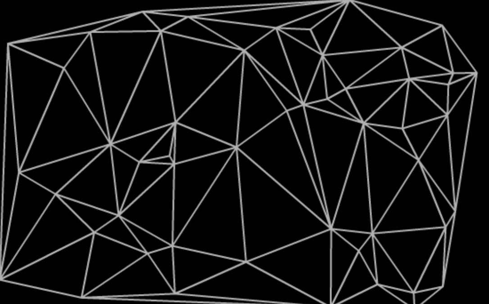
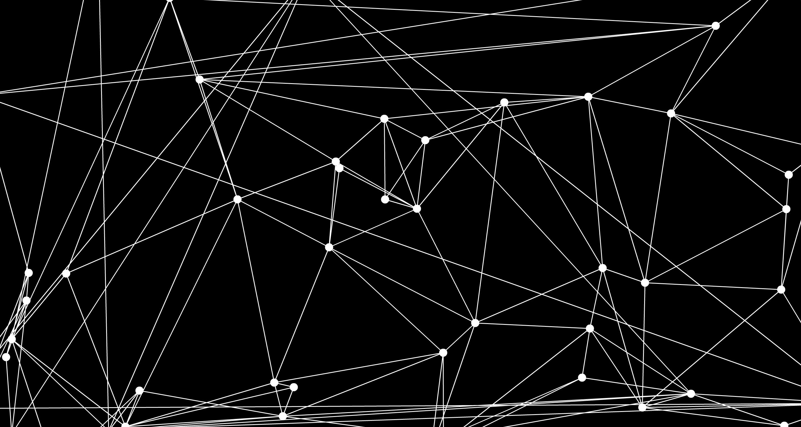

Catégorie Programmation / Aniamtion
Date 17/02.15

L'objectif du tutoriel est de créer à l'aide d'un code actionscript 3 et Flash Profesionnal une triangulation de Delaunay. Par la suite, il s'agira d'analyser le fonctionnement de la librairie nous permettent de créer la triangulation pour animer les points la formant.
En mathématiques et plus particulièrement en géométrie algorithmique, la triangulation de Delaunay d'un ensemble P de points du plan est une triangulation DT(P) telle qu'aucun point de P n'est à l'intérieur du cercle circonscrit d'un des triangles de DT(P). Les triangulations de Delaunay maximisent le plus petit angle de l'ensemble des angles des triangles, évitant ainsi les triangles « allongés ». La création du diagramme se fera à partir de la bibliothèque AS3Delaunay.
Premièrement, il faut importer les fichiers actionscript 3 de la librairie, puis déclarer les variables nécessaires à la création de la triangulation. Il faut créer:
Une variable « _points » de type « vector » pour enregistrer les points devant à faire le diagramme.
Une variable « _plotBounds » de type rectangle pour délimiter les limites du diagramme.
Une variable« _voronoi » de type « voronoi » qui contiendra le diagramme complet.
Une variable« _segment » de type « vector » qui contiendra les sègements relient les points.
package delaunaydemo {
import com.nodename.Delaunay.Voronoi;
import com.nodename.geom.LineSegment;
import flash.display.Sprite;
import flash.events.Event;
import flash.geom.Point;
import flash.geom.Rectangle;
public class Example extends Sprite {
private var _points:Vector.;
private var _plotBounds:Rectangle;
private var _voronoi:Voronoi;
private var _segments:Vector.;
Créer une fonction d’initialisation qui est lue après l’ajout de la scène dans la liste d’affichage. Dans cette fonction, une boucle crée le nombre de point désiré et les positionne aléatoirement sur la scène et les insère dans le tableau _points.
package delaunaydemo {
public function Example() {
if (stage) init();
else addEventListener(Event.ADDED_TO_STAGE, init);
}
private function init(event:Event = null):void {
_points = new Vector.();
for (var i:uint = 0; i < 50; i++) {
var point:Point = new Point(Math.random() * stage.stageWidth, Math.random() * stage.stageHeight);
_points.push(point);
}
Initialiser les objets en lien avec leurs variables respectives, puis, dans une boucle « for each » dessiner les segments à partir des cordonnées calculées par la librairie.
_plotBounds = new Rectangle(0, 0, stage.stageWidth, stage.stageHeight);
_voronoi = new Voronoi(_points, null, _plotBounds);
_segments = _voronoi.delaunayTriangulation();
for each (var segment:LineSegment in _segments) {
graphics.lineStyle(2, 0x000000, 1);
graphics.moveTo(segment.p0.x, segment.p0.y);
graphics.lineTo(segment.p1.x, segment.p1.y);
}
}
}
}

La création du diagramme est complétée. Une multitude de possibilités d’interaction s’offre à vous. En voici un exemple.
function onUpdate(e:Event){
for(var i =0; i < pointNumber; i++) {
_points[i].x = ((_conteneur_pointCibles.getChildAt(i)) as PointCible)._unPointCible.x;
_points[i].y = ((_conteneur_pointCibles.getChildAt(i)) as PointCible)._unPointCible.y;
}
graphics.clear();
_segments = _voronoi.delaunayTriangulation();
for each (var segment:LineSegment in _segments) {
graphics.lineStyle(2, 0xFFFFFF, 1);
graphics.moveTo(segment.p0.x, segment.p0.y);
graphics.lineTo(segment.p1.x, segment.p1.y);
}
}
Dans cet exemple, la boucle créant des segments et l’appel de la fonction créant le diagramme est déplacé dans une fonction appelée à chaque images d’une seconde. La commande « graphics.clear » est appelée pour pouvoir redessiner le diagramme à chaque fois que la fonction est appelée. Donc, pour animer le diagramme, il suffit de déplacer la position des points à l’intérieur du vecteur « _points », et à chaque images, la triangulation sera recalculée selon la nouvelle position des points.
